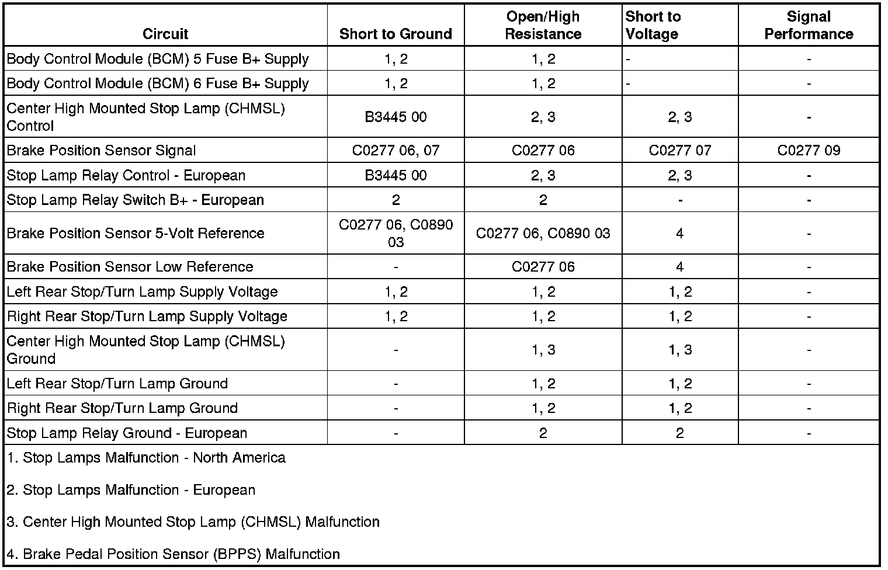

Stop Lamps Malfunction
Stop Lamps Malfunction
Diagnostic Instructions
* Perform the Diagnostic System Check - Vehicle (Initial Inspection and Diagnostic Overview) prior to using this diagnostic procedure.
* Review Strategy Based Diagnosis (Initial Inspection and Diagnostic Overview) for an overview of the diagnostic approach.
* Diagnostic Procedure Instructions (Initial Inspection and Diagnostic Overview) provides an overview of each diagnostic category.
Diagnostic Fault Information

Circuit/System Description
North America
The brake pedal position sensor is used to sense the action of the driver application of the brake pedal. The brake pedal position sensor provides an analog voltage signal that will increase as the brake pedal is applied. The body control module (BCM) provides a low reference signal and a 5-volt reference voltage to the brake pedal position sensor. When the variable signal reaches a voltage threshold indicating the brakes have been applied, the BCM will apply battery voltage to the right and left stop lamp control circuits, transmission control module (TCM), engine control module (ECM), and center high mounted stop lamp (CHMSL) control circuit.
European
The brake pedal position sensor is used to sense the action of the driver application of the brake pedal. The brake pedal position sensor provides an analog voltage signal that will increase as the brake pedal is applied. The body control module (BCM) provides a low reference signal and a 5-volt reference voltage to the brake pedal position sensor. When the variable signal reaches a voltage threshold indicating the brakes have been applied, the BCM will apply battery voltage to stop lamp relay coil side control circuit, transmission control module (TCM), engine control module (ECM), and center high mounted stop lamp (CHMSL). When the stop lamp relay receives battery voltage from the BCM, the relay coil is energized and the stop lamp relay switch contacts close applying battery voltage from the STOP LAMPS fuse to illuminate the rear stop lamps and trailer stop lamps.
Diagnostic Aids
The stop lamps will not illuminate unless the ignition is in the ON position. For more detailed information concerning stop lamp operation, refer to Exterior Lighting Systems Description and Operation (Exterior Lighting Systems Description and Operation) .
Reference Information
Schematic Reference
Exterior Lights Schematics (Exterior Lights Schematics)
Connector End View Reference
Component Connector End Views (Connector Views)
Description and Operation
Exterior Lighting Systems Description and Operation (Exterior Lighting Systems Description and Operation)
Electrical Information Reference
* Circuit Testing (Component Tests and General Diagnostics)
* Connector Repairs (Component Tests and General Diagnostics)
* Testing for Intermittent Conditions and Poor Connections (Component Tests and General Diagnostics)
* Wiring Repairs (Component Tests and General Diagnostics)
Scan Tool Reference
Control Module References (Programming and Relearning) for scan tool information
Circuit/System Verification
1. Ignition ON, observe the scan tool brake applied output signal parameter as you apply and unapply the brake pedal. The reading should cycle between OFF and ON as the brake pedal is applied and released.
• If the reading does not change as the brake pedal is applied and released, refer to Brake Pedal Position Sensor (BPPS) Malfunction.
2. With a scan tool, command the LR turn signal ON and OFF. The LR turn signal should turn ON and OFF when changing between the commanded states.
• If the LR turn signal does not illuminate when commanded, refer to Stop Lamps Malfunction.
3. With a scan tool, command the RR turn signal ON and OFF. The RR turn signal should turn ON and OFF when changing between the commanded states.
• If the RR turn signal does not illuminate when commanded, refer to Stop Lamps Malfunction.
Circuit/System Testing
Stop Lamps Malfunction - North America
1. Ignition OFF, disconnect the X4 harness connector at the BCM.
2. Ignition ON, verify that a test lamp illuminates between the BCM 5 fuse voltage supply circuit terminal 1 and ground.
• If the test lamp does not illuminate, test the voltage supply circuit for a short to ground or an open/high resistance.
3. Ignition ON, verify that a test lamp illuminates between the BCM 6 fuse voltage supply circuit terminal 3 and ground.
• If the test lamp does not illuminate, test the voltage supply circuit for a short to ground or an open/high resistance.
4. Ignition OFF, reconnect the X4 harness connector at the BCM.
5. Ignition OFF, disconnect harness connector at the inoperative stop lamp.
6. Ignition OFF, exterior lamps OFF, test for less than 5.0 ohms between the ground circuit terminal D and ground.
• If greater than the specified range, test the ground circuit for an open/high resistance.
7. Connect a test lamp between the control circuit terminal E and the ground circuit terminal D.
8. Ignition ON, command the stop lamps ON and OFF by commanding the appropriate rear turn signal parameter ON and OFF with a scan tool. The test lamp should turn ON and OFF when changing between the commanded states.
• If the test lamp is always ON, test the control circuit for a short to voltage. If the circuit tests normal, replace the BCM.
• If the test lamp is always OFF, test the control circuit for a short to ground or an open/high resistance. If the circuit tests normal, replace the BCM.
9. If all circuits test normal, replace the inoperative stop lamp.
Stop Lamps Malfunction - European
1. Ignition OFF, disconnect the X4 harness connector at the BCM.
2. Ignition ON, verify that a test lamp illuminates between the BCM 5 fuse voltage supply circuit terminal 1 and ground.
• If the test lamp does not illuminate, test the voltage supply circuit for a short to ground or an open/high resistance.
3. Ignition ON, verify that a test lamp illuminates between the BCM 6 fuse voltage supply circuit terminal 3 and ground.
• If the test lamp does not illuminate, test the voltage supply circuit for a short to ground or an open/high resistance.
4. Ignition OFF, reconnect the X4 harness connector at the BCM.
5. Ignition OFF, disconnect the stop lamp relay.
6. Ignition OFF, exterior lamps OFF, test for less than 5.0 ohms between the ground circuit terminal R5 and ground.
• If greater than the specified range, test the ground circuit for an open/high resistance.
7. Ignition ON, verify that a test lamp does not illuminate between the control circuit terminal R1 and ground.
• If the test lamp illuminates, test the control circuit for a short to voltage.
8. Verify that a test lamp illuminates between the B+ circuit terminal R2 and ground.
• If the test lamp does not illuminate, test the B+ circuit for a short to ground or an open/high resistance. If the circuit tests normal and the B+ circuit fuse is open, test the relay control circuit terminal R3 for a short to ground. If the circuit tests normal, test or replace the stop lamp relay.
9. Connect a test lamp between the control circuit terminal R1 and the ground circuit terminal R5.
10. Ignition ON, command the stop lamps ON and OFF by applying the brake pedal. The test lamp should turn ON and OFF when changing between the commanded states.
• If the test lamp is always ON, test the control circuit for a short to ground. If the circuit tests normal, replace the BCM.
• If the test lamp is always OFF, test the control circuit for a short to voltage or an open/high resistance. If the circuit tests normal, replace the BCM.
11. Disconnect the harness connector at the inoperative stop lamp.
12. Ignition OFF, exterior lamps OFF, test for less than 5.0 ohms between the ground circuit terminal D and ground.
• If greater than the specified range, test the ground circuit for an open/high resistance.
13. Connect a test lamp between the control circuit terminal E and the ground circuit terminal D.
14. Ignition ON, command the stop lamps ON and OFF by commanding the appropriate rear turn signal parameter ON and OFF with a scan tool. The test lamp should turn ON and OFF when changing between the commanded states.
• If the test lamp is always ON, test the control circuit for a short to voltage. If the circuit tests normal, replace the BCM.
• If the test lamp is always OFF, test the control circuit for a short to ground or an open/high resistance. If the circuit tests normal, replace the BCM.
15. If all circuits test normal, replace the inoperative stop lamp.
Center High Mounted Stop Lamp (CHMSL) Malfunction
1. Ignition OFF, disconnect the harness connector at the CHMSL.
2. Ignition OFF, exterior lamps OFF, test for less than 5.0 ohms between the ground circuit terminal B and ground.
• If greater than the specified range, test the ground circuit for an open/high resistance.
3. Connect a test lamp between the control circuit terminal A and the ground circuit terminal B.
4. Ignition ON, command the stop lamps ON and OFF by applying the brake pedal. The test lamp should turn ON and OFF when changing between the commanded states.
• If the test lamp is always ON, test the control circuit for a short to voltage. If the circuit tests normal, replace the BCM.
• If the test lamp is always OFF, test the control circuit for a short to ground or an open/high resistance. If the circuit tests normal, replace the BCM.
5. If all circuits test normal, test or replace the CHMSL.
Brake Pedal Position Sensor (BPPS) Malfunction
1. Ignition OFF, disconnect the harness connector at the BPPS.
2. Ignition ON, verify that a test lamp does not illuminate between the low reference circuit terminal B and ground.
• If the test lamp illuminates, test the low reference circuit for a short to voltage. If the circuit tests normal, replace the BCM.
3. Ignition ON, test for 4.8 volts and 5.2 volts between the 5-volt reference circuit terminal C and ground.
• If less than the specified range, test the 5-volt reference circuit for a short to ground or an open/high resistance. If the circuit tests normal, replace the BCM.
• If greater than the specified range, test the 5-volt reference circuit for a short to voltage. If the circuit tests normal, replace the BCM.
4. If all circuits test normal, replace the BPPS.
Repair Instructions
Perform the Diagnostic Repair Verification (Verification Tests) after completing the diagnostic procedure.
* High Mount Stop Lamp Replacement (Service and Repair)
* Tail Lamp Replacement (Service and Repair)
* Relay Replacement (Attached to Wire Harness) (Relay Replacement (Attached to Wire Harness))Relay Replacement (Within an Electrical Center) (Relay Replacement (Within an Electrical Center))
* Control Module References (Programming and Relearning) for BCM replacement, setup, and programming